Insurance Enrollment Prediction
ML pipeline predicting voluntary insurance enrollment from employee demographic data (10K rows, 8 features, 4 model families)
Key Findings
- Two features dominate:
employment_type (47-point gap) and has_dependents (45-point gap) drive the majority of predictive power across all models.
- Age has a threshold, not a slope: Step function at age 30 (26% to 70% enrollment). Captured via SplineTransformer for LR; tree models handle it natively.
- Gender, region, tenure are noise: Near-zero importance across all models and SHAP. Retained for regulatory and real-data considerations.
- Model-specific pipelines matter: LR needs splines + TargetEncoder + scaling. Trees need raw features + native categorical handling. One shared pipeline forces compromises.
Cross-Validation Results (Stratified 5-Fold)
Logistic Regression
Splines + TargetEncoder + Scaler
99.0%
F1 Score0.9921
ROC-AUC0.9995
Recall0.9895
Random Forest
OrdinalEncoder + Raw Numerics
99.9%
F1 Score0.9998
ROC-AUC1.0000
Recall0.9998
XGBoost
Native Categorical Splits
99.9%
F1 Score0.9995
ROC-AUC0.9999
Recall0.9994
LightGBM
Native Categorical Splits
99.9%
F1 Score0.9994
ROC-AUC0.9999
Recall0.9992
Near-perfect metrics reflect synthetic data with clean decision boundaries. The pipeline architecture (model-specific preprocessing, drift detection, experiment tracking) is the real deliverable - it transfers directly to noisier real-world data.
Optuna Hyperparameter Tuning (Random Forest)
50 trials, TPE sampler, stratified 5-fold CV objective, 300s timeout
| Hyperparameter | Default | Tuned | Effect |
|---|
| n_estimators | 200 | 447 | Lower variance |
| max_depth | 10 | 20 | Deeper interaction capture |
| min_samples_split | 2 | 15 | Regularization |
| min_samples_leaf | 1 | 1 | No change |
| max_features | sqrt | sqrt | No change |
Final Test Set Performance (Held-out 20%)
| Metric | Value |
|---|
| Accuracy | 0.9995 |
| Precision | 1.0000 |
| Recall | 0.9992 |
| F1 Score | 0.9996 |
| ROC-AUC | 1.0000 |
Model-Specific Feature Pipelines
Logistic Regression
Respects linearity assumption with non-linear basis functions and proper encoding.
OutlierCapper (IQR)
SafeEncoder
SplineTransformer (degree=3, 5 quantile knots)
TargetEncoder (cv=5, smooth=auto)
StandardScaler
Random Forest
Scale-invariant, handles outliers natively. Minimal preprocessing.
SafeEncoder
OrdinalEncoder
Passthrough numerics
XGBoost / LightGBM
Native categorical support evaluates optimal category groupings at each split.
SafeEncoder
CategoricalDtypeTransformer
Passthrough numerics
Visual Analysis
EDA
Feature Importance
SHAP
Calibration
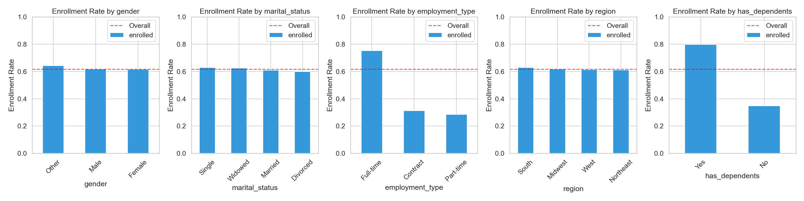
Enrollment Rates by Category - employment_type and has_dependents dominate
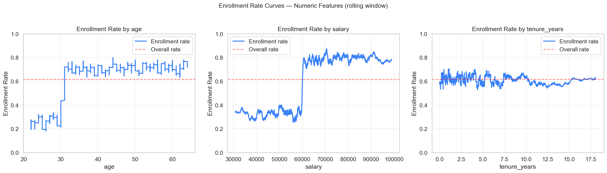
Rolling Window Enrollment Rate - age step at 30, salary monotonic, tenure flat
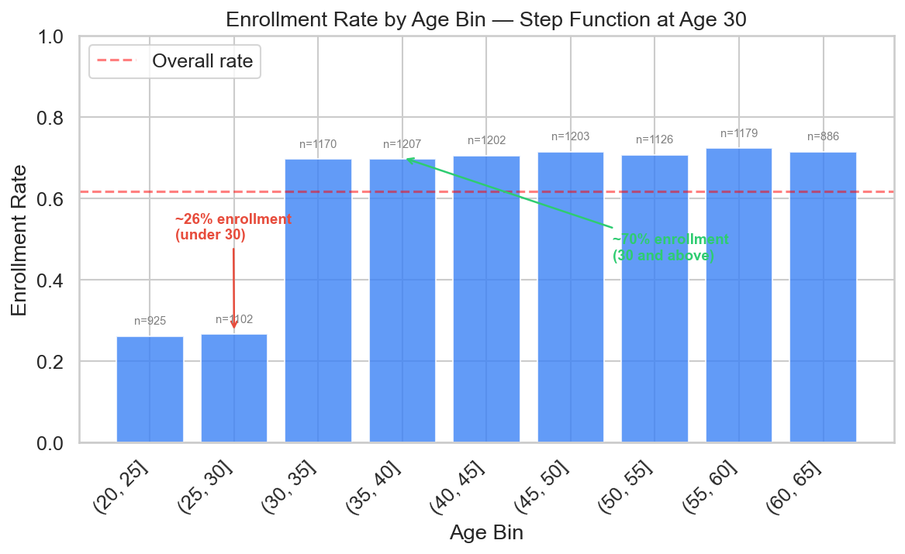
Age Step Function - 26% under 30 vs 70% at 30+
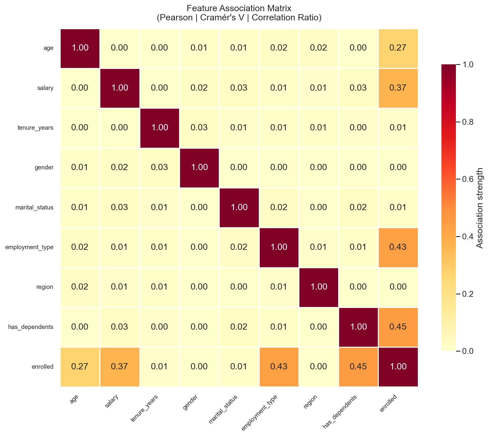
Association Matrix (Pearson | Cramer's V | Correlation Ratio)
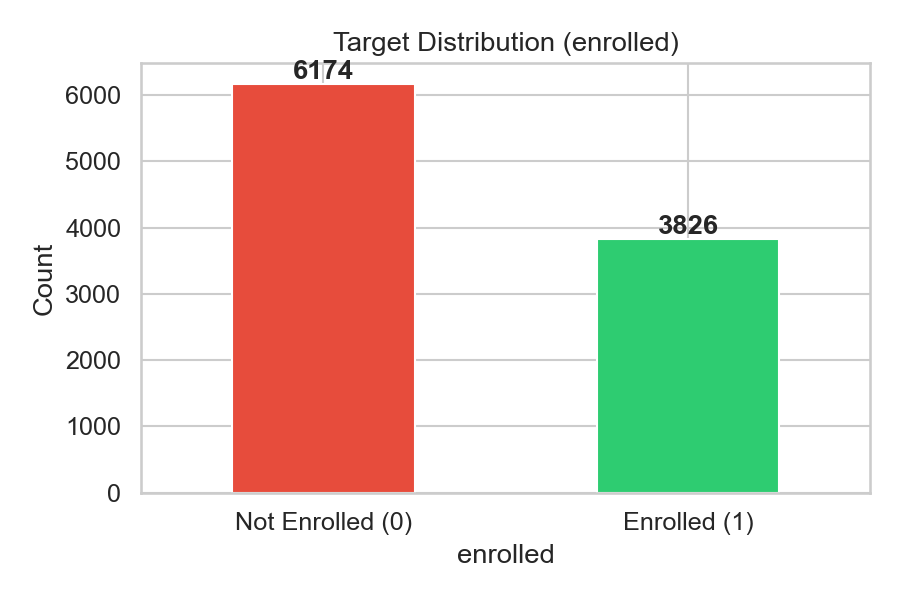
Target Distribution - 61.7% enrolled (moderate imbalance)
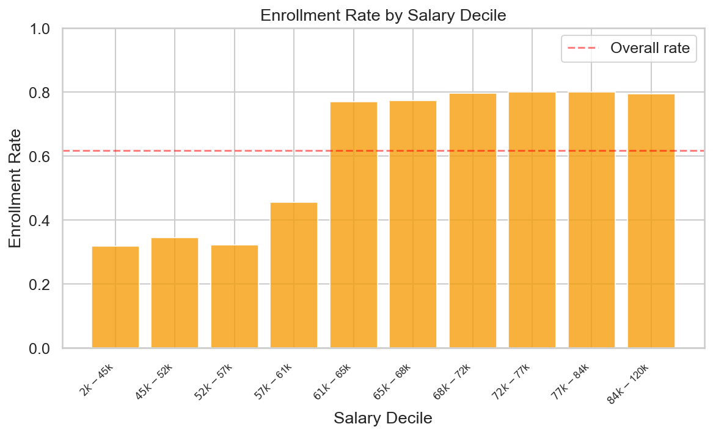
Enrollment Rate by Salary Decile
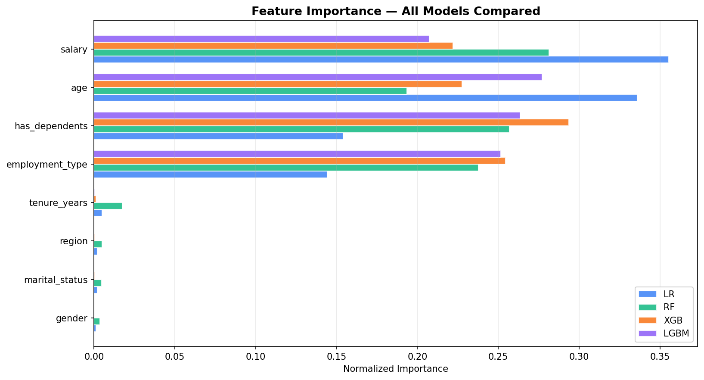
Feature Importance - All 4 Models (employment_type and has_dependents dominate)
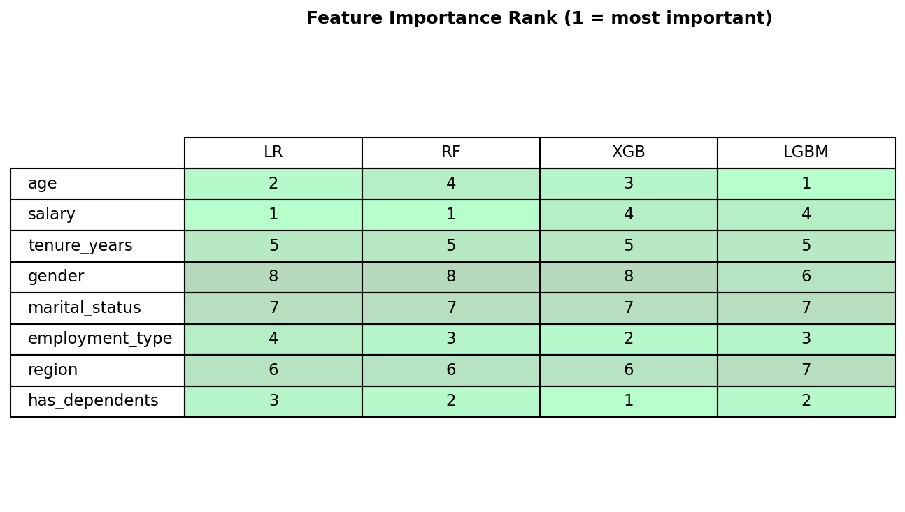
Feature Rank Matrix - cross-model consensus on top features
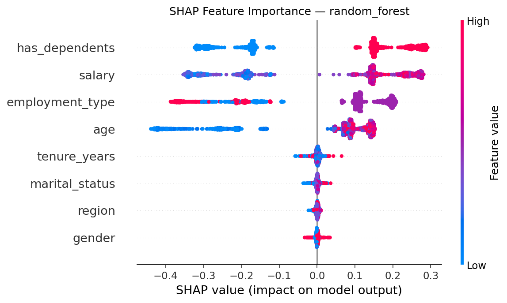
SHAP Summary - global importance and direction of effect
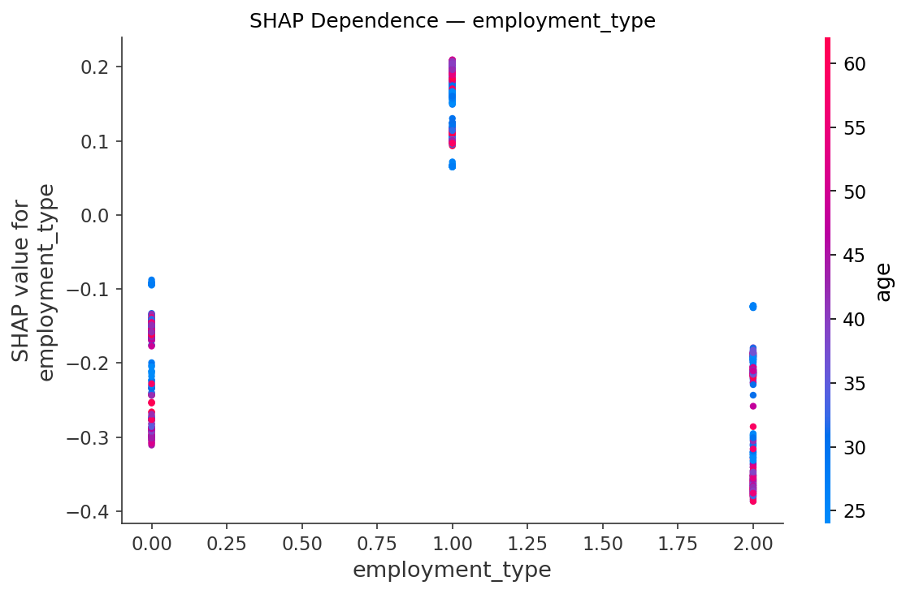
SHAP Dependence - Employment Type
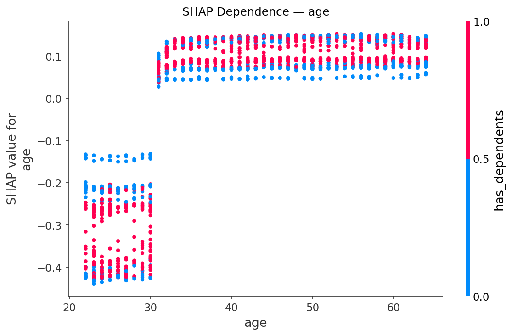
SHAP Dependence - Age (step function visible at 30)
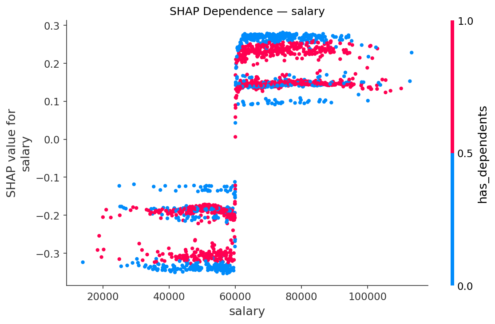
SHAP Dependence - Salary (monotonic positive)
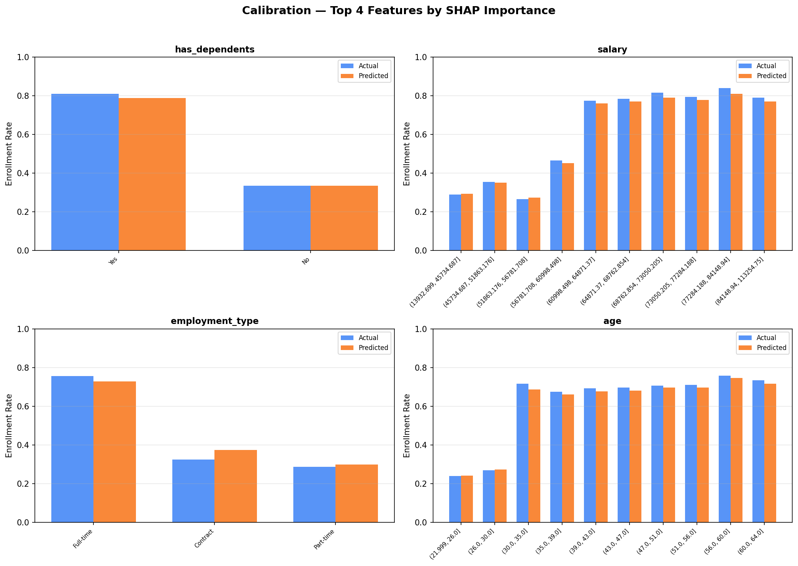
Top 4 Features by SHAP - Predicted vs Actual Enrollment Rate
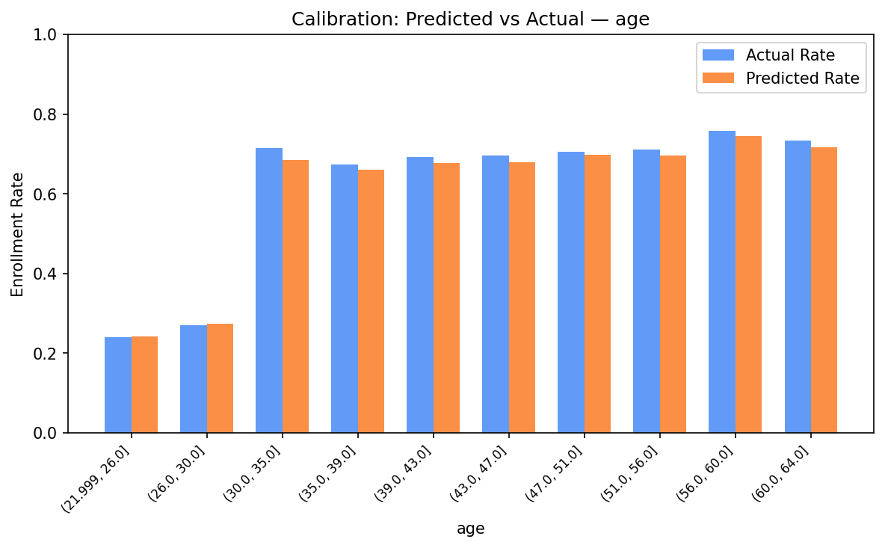
Calibration by Age Bin
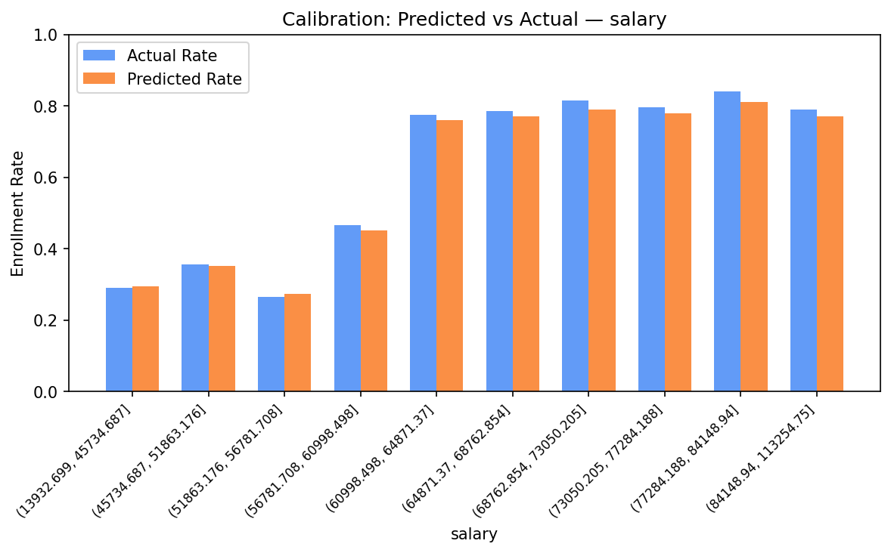
Calibration by Salary Decile
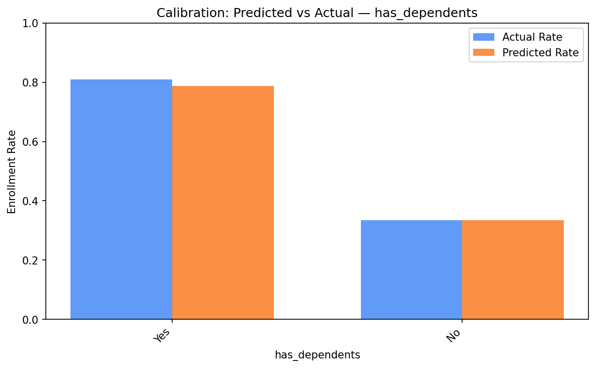
Calibration by Dependent Status